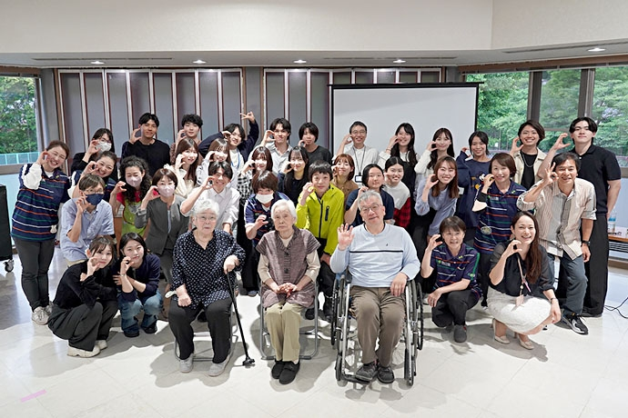
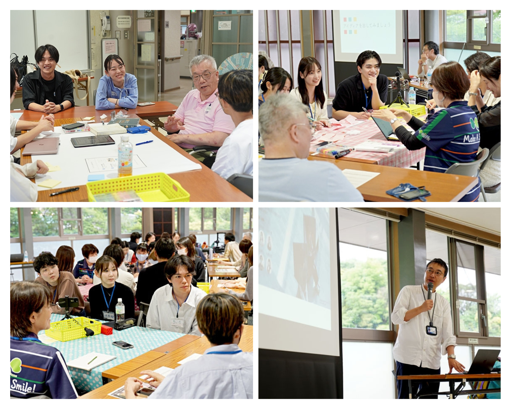
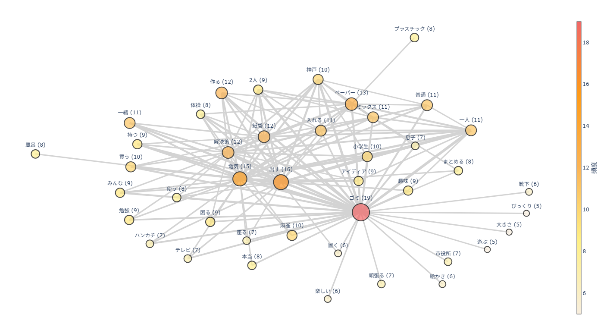
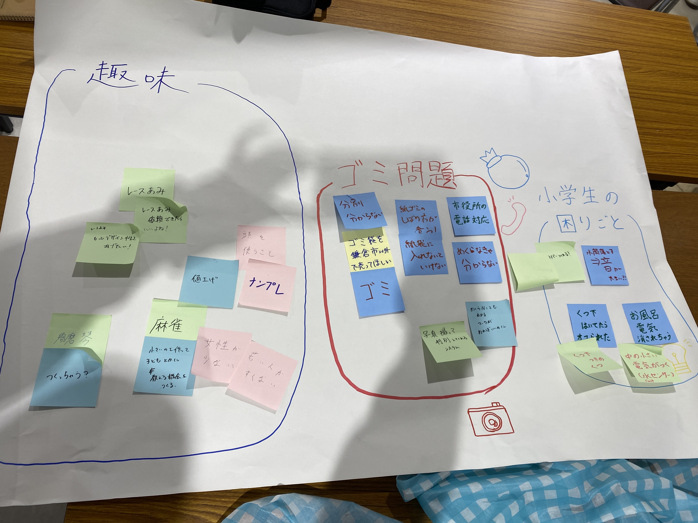
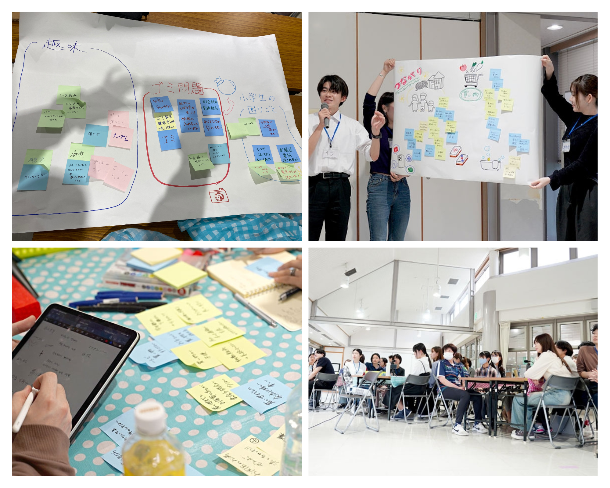
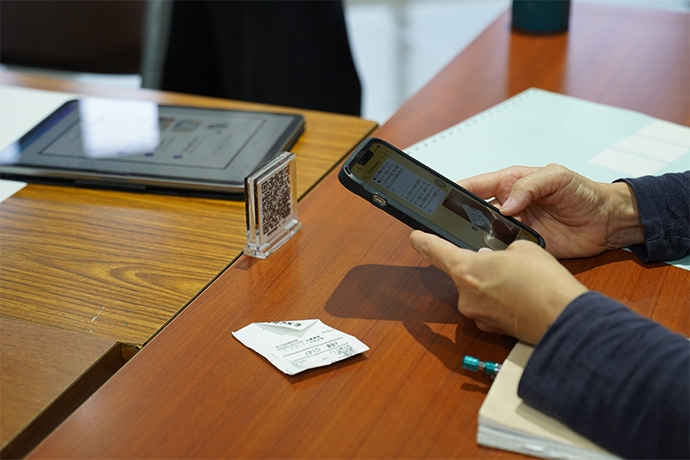
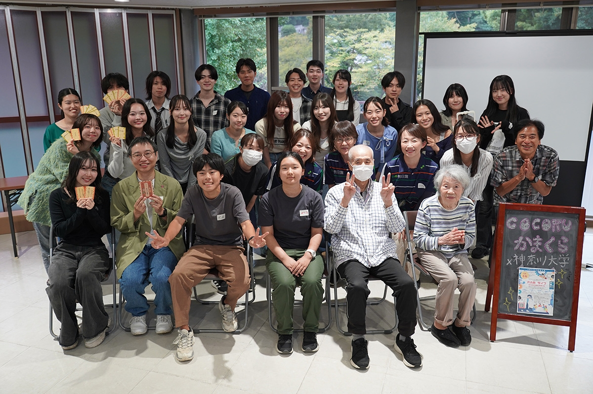

鎌倉市 × 神奈川大学 道用ゼミ 共同プロジェクト
鎌倉市が推進する「Fab City」の実現に向け、鎌倉市民の「日常の困りごと」や「あったらいいな」を、 3DプリンターやIoT、AIなどのデジタルファブリケーション（FAB）を通じて解決する共創プロジェクト。 2021年に締結された包括連携協定に基づき、 デザイン思考の実践的な学びの場として実施されました。
その中で私たちは、自分たちとは異なる生活環境や視点、世代や価値観を持つ市民の方々との対話を通じ、 「共感・定義・アイディア創出・プロトタイピング・テスト」というデザイン思考のプロセスを回しながら、 実社会の課題解決に取り組みました。
鎌倉市民の方々へのインタビューを実施。あえて「困りごとは何ですか？」と直接聞くのではなく、日常会話の中から潜在的な悩みを引き出す文化人類学でよく使われるフィールドワークというアプローチ手法を実践しました。
インタビュー手法： 自然な会話から議題を引き出すインタビュー練習を経て、現地での対話を実施。
分析： 得られた発言を共起ネットワークを用いて可視化し、市民が真に感じている課題の構造を分析しました。


リサーチの結果、鎌倉市民が直面している切実な課題として、「ゴミ分別の細かさと複雑さ」が浮き彫りになりました。 環境意識が高い街だからこそ生じているこの負担を、テクノロジーで解消することを目指しました。 さらにゴミの捨て方や分別に関する市役所の電話対応の現状などの問題も議題にあがり、これらを総合的に解決するためのアイディエーションへと進みました。

アイディエーションの段階では、鎌倉市民の方々がゴミ分別に関して感じている「面倒くさい」「わかりづらい」という感情を解消するためのアイディアをブレインストーミングしました。
その中で、誰もが持っているスマートフォン、かつ使い慣れたインターフェースであるLINEを活用し、AIで回答するチャットボットが最も市民の生活に寄り添えると判断しました。

「調べたい時に、すぐ、簡単に分かる」をコンセプトに以下の技術を組み合わせて解決策を構築しました。
開発したプロトタイプを用いて、鎌倉市の方々に実際に試していただく場（発表会）を設けました。
発表自体は事前に撮影、制作した動画を用いて使い方の説明、解説を行い、その後実際に市民の方々にLINEで写真を送ってもらい、AIが分別方法を回答する体験をしていただきました。
単なるアイディア提案ではなく、実際に動く「モノ」を通して、市民の生活がどう「ちょっといい」ものになるかを検証し、
さらにフィードバックを得ることで、プロジェクトの改善点を発見することができました。

LINE公式アカウントでゴミの写真を判別している様子です。
本プロジェクトでの実践を通じ、技術面だけでなく、社会課題に対してどのようにテクノロジーを適応させるべきか、多くの貴重な経験を積むことができました。
